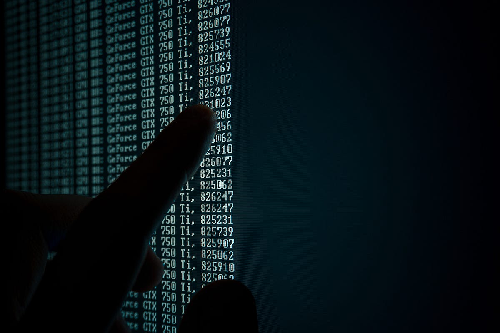

DINERO TOKENIZADO
Una característica central del Modelo CBDC es la arquitectura tokenizada, por la cual una Moneda Estable Digital sería Dinero Real en forma de Token, proporcionando nuevos niveles de portabilidad, eficiencia y accesibilidad
Si bien hoy en día gran parte de las transacciones son electrónicas, el dinero que se intercambia es muy diferente de una Moneda Estable Digital en tanto Dinero Tokenizado. El dinero que se intercambia en las transacciones electrónicas actuales es dinero “basado en cuentas” que las Instituciones Financieras mantienen en nombre de los propietarios del dinero
Las transacciones “basadas en cuentas” son una serie de mensajes del Banco de un participante al Banco del otro que verifican la transacción. Los Bancos deben actuar en nombre de ambas partes para que se lleve a cabo la transacción, y es probable que ambas Instituciones estén cobrando una tarifa por llevar a cabo este proceso
El Modelo CBDC basado en Tokens permite crear un formato de transacción seguro que evita el doble gasto, no es maleable (los detalles de la transacción no se pueden cambiar una vez que ha ocurrido) y no se puede reproducir (las transacciones confirmadas no se pueden volver a enviar con motivo de efectuar otra transferencia)
Por tanto, una Moneda Estable Digital sería el único medio que podría proporcionar un Token al Portador Digital emitido por el Banco Central, y tendría el potencial de un sistema extensible que podría proporcionar los beneficios transaccionales de una Moneda Digital Estable, combinada con la confianza y el bajo riesgo del Banco
